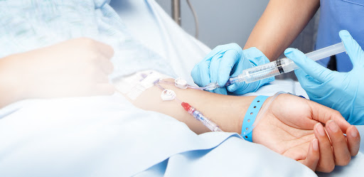
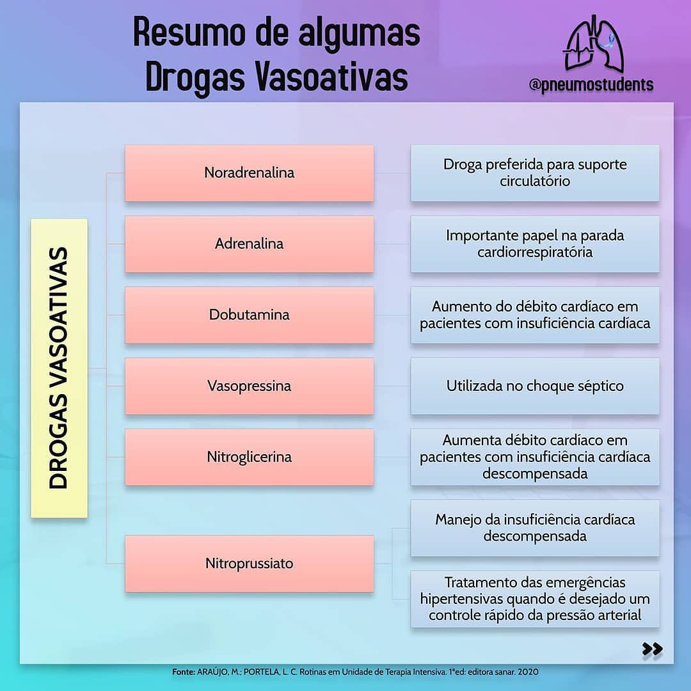

A terapia nutricional consiste em um conjunto de procedimentos destinados a manter ou restaurar o estado nutricional do paciente pela administração de alimentos artificiais. O paciente gravemente doente necessita do uso de terapia nutricional, enteral ou parenteral, principalmente para minimizar redução do estresse fisiológico e dos efeitos adversos do catabolismo proteico. A terapia enteral é a de primeira escolha por ser mais fisiológica e apresentar mais vantagens em relação à parenteral. A Nutrição Enteral (NE) tem em sua composição alimentos para fins especiais, quantidade controlada de nutrientes, na forma isolada ou combinada, de composição definida ou estimada, ou seja, nutrientes e calorias fornecidos em quantidade e qualidade adequada.
As reações adversas a fármacos e nutrientes na UTI variam dependendo da substância utilizada e das condições específicas do paciente. Podem incluir desde efeitos colaterais comuns, como náuseas e tonturas, até reações mais graves, como hipersensibilidade ou disfunções hepáticas. A monitorização contínua é essencial para identificar prontamente qualquer reação adversa e ajustar o tratamento conforme necessário. O trabalho colaborativo da equipe médica é crucial para minimizar riscos e otimizar a terapia na UTI.
A inibição de fármacos e nutrientes na UTI pode ocorrer devido a interações medicamentosas, comprometimento da absorção ou metabolismo, entre outros fatores. Isso pode reduzir a eficácia do tratamento. A monitorização frequente, ajustes na medicação conforme necessário e a comunicação efetiva entre os profissionais de saúde são cruciais para evitar e lidar com possíveis inibições, assegurando um manejo eficaz na UTI.
Os fármacos e nutrientes desempenham papéis vitais na UTI. Os fármacos são essenciais para controlar a dor, tratar infecções, manter a pressão arterial e regular outras funções fisiológicas. Os nutrientes fornecem suporte nutricional crítico para pacientes debilitados. Ambos desempenham um papel fundamental na recuperação e estabilização dos pacientes na UTI, sendo parte integrante de protocolos de tratamento multidisciplinares. O gerenciamento adequado desses elementos contribui significativamente para a melhoria do estado de saúde dos pacientes críticos.
paciente recebe os nutrientes através de uma sonda nasogástrica. Introduzida através da cavidade nasal e fica localizada no estomago do paciente e também a nasoentérica. introduzida pelo nariz que fica localizado no intestino do paciente.
São nutrientes infusos diretamente na corrente sanguínea. São utilizados micro e macronutrientes, pelos acessos calibrosas, e pelo acesso central. A via parenteral dá a certeza de que o imunonutriente atinge a circulação na dose certa, o que nem sempre é possível de prever quando se trata da via enteral em um paciente grave. A nutrição parenteral é indicada quando a meta nutricional não puder ser alcançada apenas com uso do TGI.
são drogas que possuem efeitos vasculares periféricos, pulmonares ou cardíacos. Age no endotélio dilatando ou contraindo e direto na contração muscular do coração.

Pode ter necrose em acesso periféricos. (vesicante)
Diluição somente em SG
Meia-vida de 3 min.
Acesso somente em bomba de infusão.
Acesso central.
Necessita de controle arterial.
Incompatíveis com soluções alcalinas.
Dose baixa: vasodilatação mesentérica, renal com aumento de diurese.
Dose moderada: tem efeito inotrópico.
Dose alta: função vasopressora com aumento da RVS (resistência vascular sistêmica)
Indicada na hipotensão associada ao choque, choque cardiogênico, séptico e anafilático.
Vasopressor indicado para PCR, bradicardia sintomática, hipotensão grave, anafilaxia e choque.
Infusa em SC, EV, inalação.
Não infundir: Bicarbonato (precipita).
Observar debito urinário.
Vasoconstrição, antidiurese, contrição seletiva das arteríolas glomerulares eferentes.
Não infundir: Bicarbonato (precipita)
Verificação vitais.
Meia vida 6 min
MCC, respiratório e debito cardíaco.
Promove dilatação direta na musculatura arteriolar e venosa.
Rápida redução da pré e pós carga.
Indicada nas emergências hipertensivas.
Toxidade - Cianeto – Tiocianato
FC, FR elevada, espasmos musculares, vômitos, vertigens, diarreia, confusão mental.
Observar sinais de toxidade por tempo longo.
Composto de dinamite, descoberto em 1879.
Potente vasodilatador para tratar doenças cardíacas, como infartos e isquemias.
Promove dilatação sistêmico arterial e venoso.
Usada para crise da Angina Pectoris.
Hipertensão perioperatoria.
Efeitos de Hipotensão e cifaleía.
Antagonizar o efeito da Heparina.
Não associar com Hidralazina, ou Fenitoina.
Não correr junto com alteplase
Semelhante a dopamina estruturalmente.
Indicada para paciente baixo debito cardíaco,
Disfunção no miocárdica como IC descompesado.
Choque cardiogênico.
Incompatível com soluções alcalinas
Incompatível também com: cefazolina,
penicilina, heparina e hidrocortisona